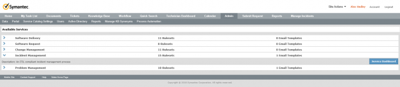
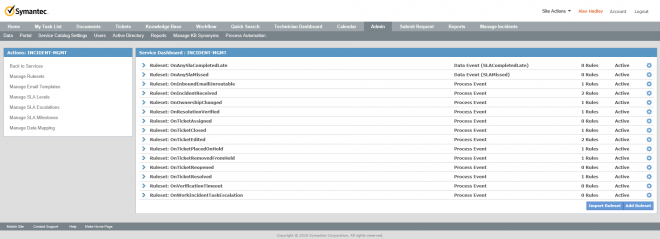
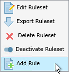
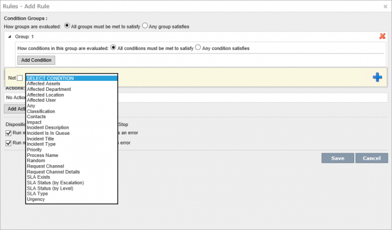
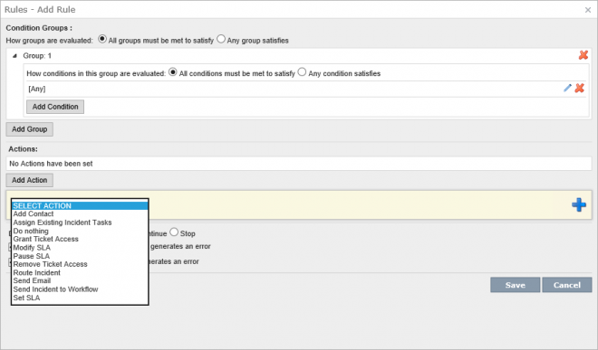

Table Of Contents
Admin | Process Automation | [Choose Service] | Service Dashboard

Manage Rulesets

Actions | Add Rule

Condition Groups :
How groups are evaluated: o All groups must be met to satisfy o Any group satisfies
"Add Group"

Actions:
Disposition (on successful actions): o Continue o Stop
"Add Action"

x Run next rule if any condition evaluation generates an error
x Run next rule if any action execution generates an error
There are a number of Actions you can take, one example is "Route Incident".
This can to be either a "Specific Service Queue" or using a "Routing Table"


Each of the Services have their own Ruleses and you can create your own with Custom Rulsets.
Each Service is further detailed on their own pages, this will list the Rulesets available to add Rules too.
If you want to learn more about the new Software Request Process Workflow check out my other Articles
Videos
Jason Short created a series of videos on ServiceDesk Configuration if you'd like to learn more.
ServiceDesk Configuration: Rulesets Overview
https://www.symantec.com/connect/videos/servicedesk-configuration-rulesets-overview
This video will provide a good overview of rulesets in ServiceDesk. The video covers the basic components of a rule, as well as, how to configure rules to work together as part of more complex logic.
If you prefer a written Article to a video see the transcription below:
There are 2 Ruleset Types.
- Process Events
- OnIncidentReceived
- Data Events
- Comment added to ticket
Each Ruleset has 4 major components.
- Trigger
- Process/Data Events that cause a rule to be ran
- Evaluation
- A rule does an Evaluation of specific data on that ticket
- Action
- It occurs if that Evaluation is met
- Sending an email, setting a value on a ticket
- Continuation Logic
- Whether or not to rule the next rule
Click on Admin | Process Automation
Expand Incident Management and click on Service Dashboard.
There will be a list of Rulesets, which tell you what Type they are.
Process Events happen at a fixed point in time, OnIncidentReceived or OnTicketAssigned.
Expand one of these and click on the
Lightning bolt then
Add Rule.
Add Group -> Add Condition -> “Any“ -> +.
Add Action -> choose Action -> +.
There are some options in Advanced to continue certain rules.
Then you can Save.
Each rule overwrites data from the previous. Run the general rules first then the more specific so you can use the arrows to move it up the list.
ServiceDesk Customization: Send Incident to Workflow Ruleset Action
https://www.symantec.com/connect/videos/servicedesk-customization-send-incident-workflow-ruleset-action
Extra WF Projects have been created to help with Rulesets
ServiceDesk 7.5 Rulesets & E-mail template Import/Export project
https://www.symantec.com/connect/videos/servicedesk-75-rulesets-e-mail-template-importexport-project